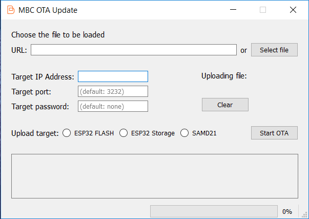

- Generated by
 1.8.15
1.8.15
|
MBC-WB Documentation
1.3.0
|
The Arduino® IDE provides a ready to use environment to start using the board. In order to simplify user experience, a lot of tools and utilities have been already built for this environment.
However, the Arudino IDE is not a professional IDE for writing code and you may want to use something different for your application.
You can completely forget about the Arduino platform and you can write your own application from scratch, by using the IDE you prefer for both the SAMD21 (e.g. Atmel Studio) and the ESP32 (e.g. the ESP IDF).
The only thing you need to take care about is the firmware upload. Once your binary is ready, you will have to use the mbctool or brikiOta to upload it.
The MBC-WB board comes with a pre-burned bootloader on SAMD21. This bootloader takes care of firmware uploading through USB on both SAMD21 and ESP32. You will not have direct access to ESP32 so you cannot use its tools for uploading code.
The mbctool provides all the necessary commands to write the code on both the MCUs using USB connection, while brikiOta is the tool used for OTA updates. This tools are already integrated in the MBC-WB Arduino platform. This document is intented to give an explanation on how to use this tools outside the Arduino environment.
Note: When building application for SAMD21 you should take care to not overwrite the bootloader firmware. The bootloader firmware is 8KB long, hence your application needs to start from address 0x2000 of the flash memory.
If you overwrite the firmware bootloader you will not be able to load binaries anymore into your board through USB connection. You can always restore the bootloader firmware (a copy of it is present inside the MBC-WB Arduino platform), but you will need an external SWD programmer to load the firmware on SAMD21.
Mbctool is a command line executable to load binary images on the MBC-WB board. A copy of this tool can be downloaded from Briki website for Windows, Linux and Mac.
The tool leans on bossac and a customized version of esptool to load the firmware. It simply starts the communication with bootloader to tell whether the programming is for SAMD21 or ESP32, then it launch the proper application (bossac or esptool) that will actually load the code into the selected target.
Hence, in the same folder of mbctool application you will find a copy of bossac and esptool command line applications. In order to work with mbctool it is needed to not move these applications: all the three executables need to be in the same folder in order for mbctool to properly work.
To load a binary on SAMD21 you can launch the following command from the command line:
mbctool -d <samd> -p <port> -u <firmware.bin>Where: -d specifies the target device (--device); -p specifies the USB port the board is connected to (--port); -u specifies the file to be loaded (--upload).
mbctool -d <esp> -p <port> -u <0x1000 bootloader.bin>
Where: -d specifies the target device (--device); -p specifies the USB port the board is connected to (--port); -u specifies offset and file to be loaded (--upload).
If you want to load also application and partition table together with bootloader, you can launch the following command:
mbctool -d <esp> -p <port> -u <0x1000 bootloader.bin 0x10000 application.bin 0x8000 partitions.bin>
The whole command after -u option will not be parsed by mbctool, it will instead be passed to the write command of esptool as it is, allowing the maximum flexibility.
You won't be able to specify the reset option for the write command instead, the ESP32 will be hard reset after every programming.
For the ESP32 only, you can also specify the upload speed (it is 115200 baud by default) with -s option. Ad example, to load a binary image at 1500000 baud you can launch the following command:
mbctool -d <esp> -p <port> -s 1500000 -u <0x10000 firmware.bin>
BrikiOta is the tool designed to upload firmware on both of the MCUs exploiting WiFi connection. It is a GUI program that can be launched from the IDE by using MBC OTA Utility tool from Tools menu. If you've not in plan to use Arudino IDE, you can however use brikiOta by taking its executable from the Briki website for Windows, Linux and Mac.
To start brikiOta it is enough double clicking on it. A simple panel will show up, allowing you to choose a binary file to load, as well as the target of your update (SAMD21, ESP32 or the storage area of ESP32).

GUI program can be useful to simplify user experience. However, sometimes it can be useful to use only command line tools to automatize procedures. For all these cases the Espressif tool espota has been modified, in order to be compatible with MBC-WB.
Espota is a command line tool written by Espressif to perform OTA update on ESP32. This tool has been customized in order to be able to load code on SAMD21 too. The customized version of this tool is available in the platform installation directory, under tools directory.
The tool can program ESP32 target with the following command:
python espota.py -i <ESP_IP_Address> -p <ESP_OTA_PORT> -f <application.bin>
Where: -i specifies the IP address ESP32 is reachable to (--ip default is 192.168.240.1if default Access Point is used), -p specifies the OTA port the ESP is listening to (--port default is 3232) and -f is the binary file to be loaded (--file).
The tool can also program SAMD21 target by issuing the same command, adding -c option:
python espota.py -i <ESP_IP_Address> -p <ESP_OTA_PORT> -c -f <application.bin>
Where -c specifies that programming should be done on companion chip, SAMD21 (--companion).
If you want to update ESP storage partition, the command to be issued is pretty similar to the previous one. This time you will need to use -s option:
python espota.py -i <ESP_IP_Address> -p <ESP_OTA_PORT> -s -f <storage.bin>
-s option can be used to program the storage partition independently by the type of partition (SPIFFS or FAT).
Note: When updating SAMD21 via OTA remember to close and reopen the serial monitor in order to see serial output.
1.8.15